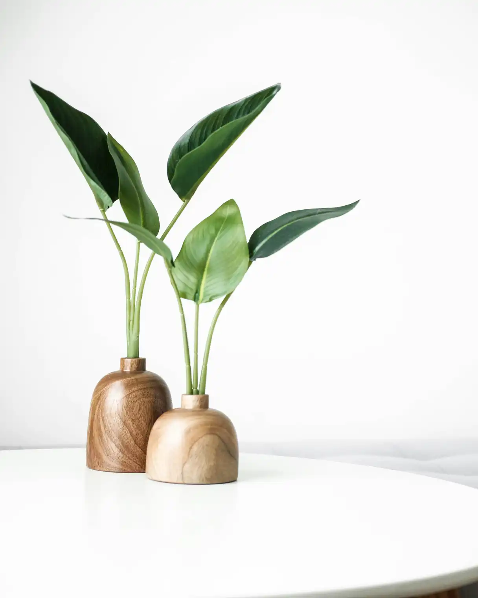
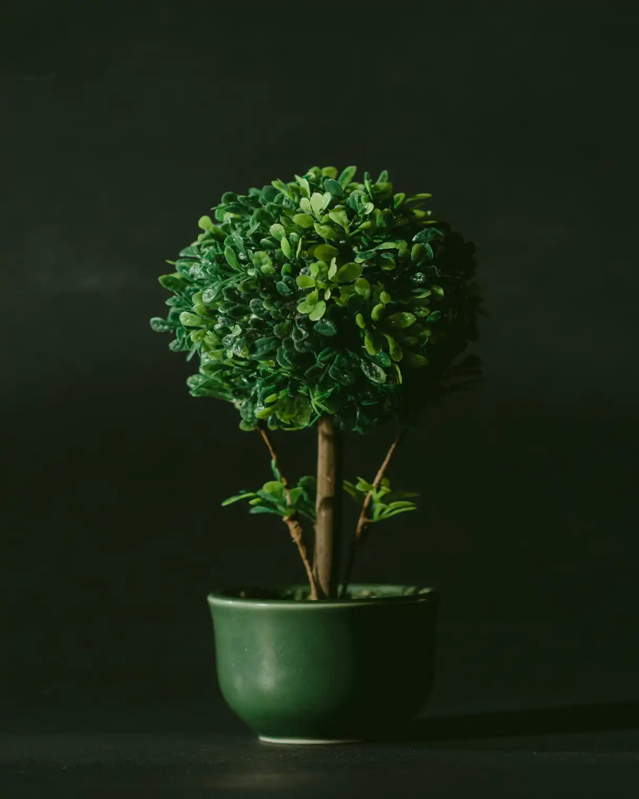
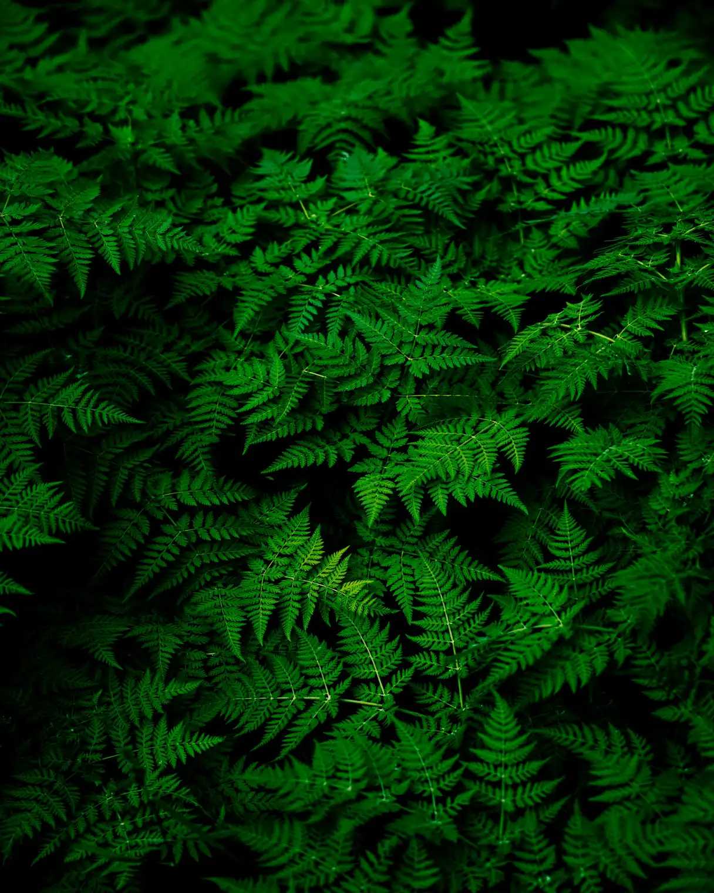
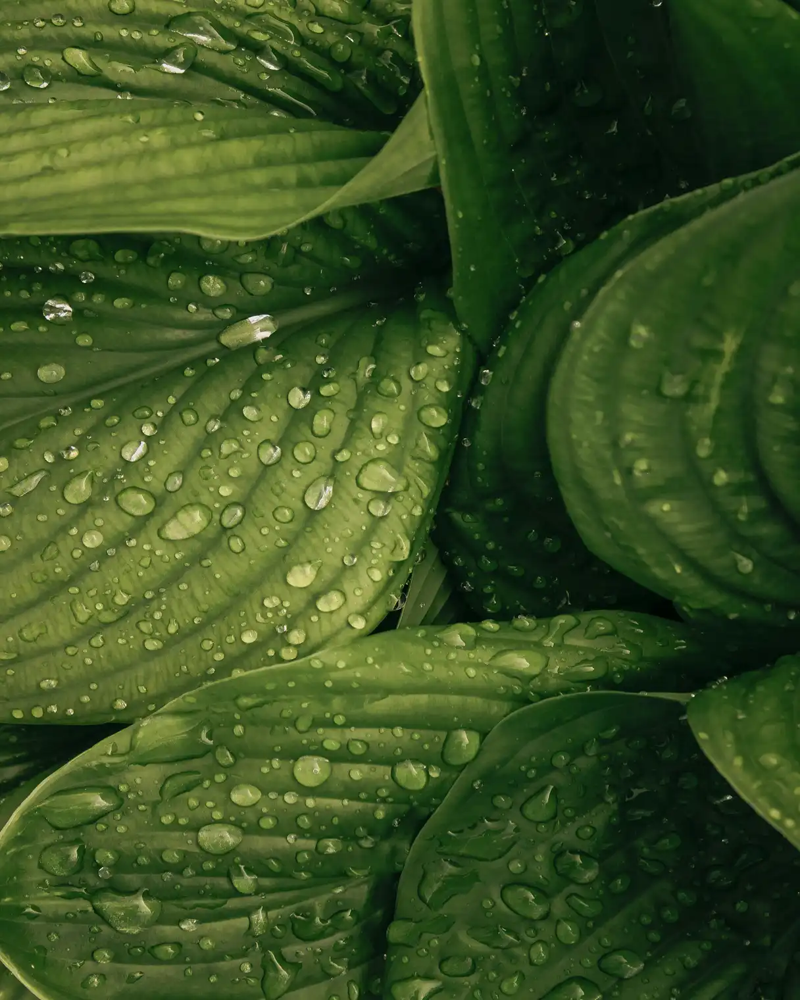
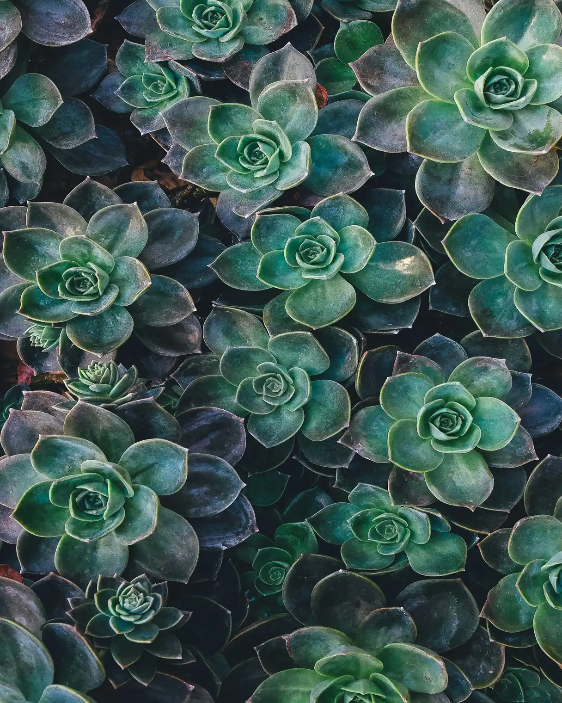
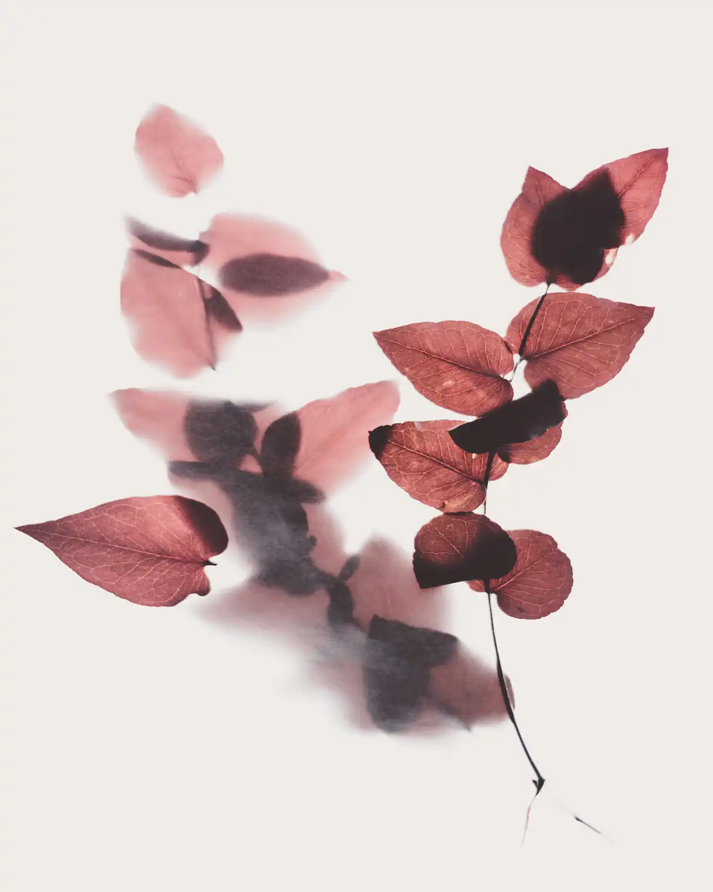
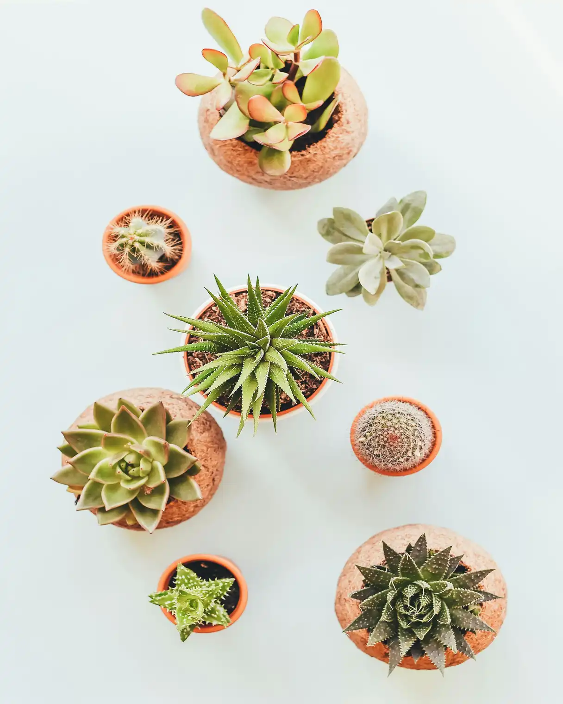
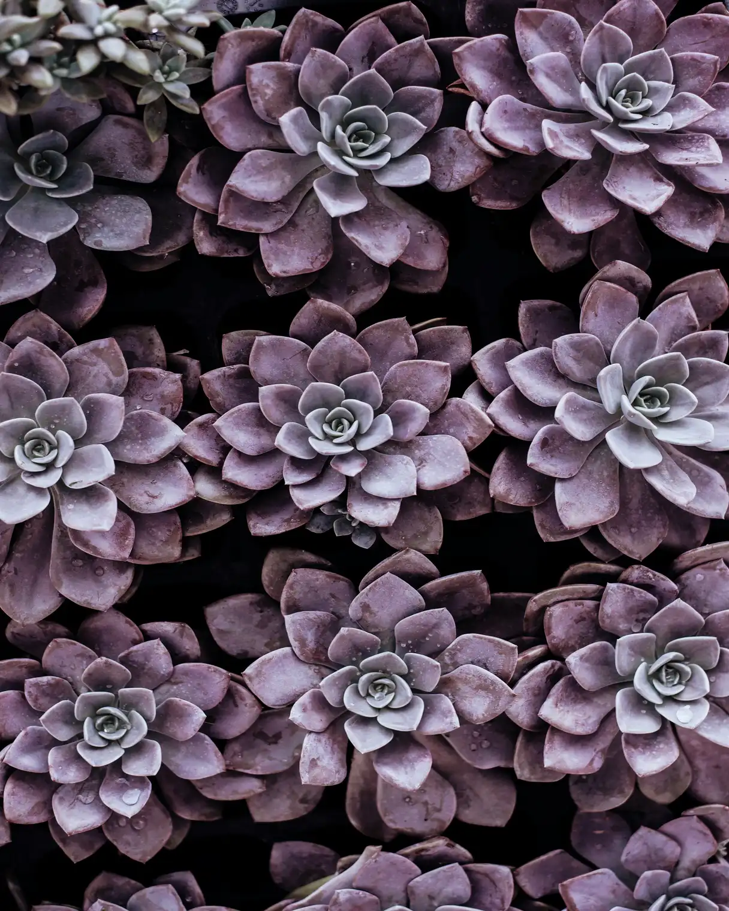

Sed eu venenatis quam, eu mollis tortor. Sed est turpis, congue bibendum rutrum vitae, eleifend sed enim. Aenean posuere eu ante vitae vulputate. Fusce varius auctor dolor. Proin molestie erat sed consequat bibendum. Duis sit amet pellentesque ipsum. Interdum et malesuada fames ac ante ipsum primis in faucibus. Aliquam ullamcorper ante id ex sagittis congue. Phasellus in pellentesque sem. Pellentesque habitant morbi tristique senectus et netus et malesuada fames ac turpis egestas.
Curabitur commodo eget erat non efficitur. Vestibulum interdum elit blandit ipsum facilisis, eu lobortis magna tempus. Donec hendrerit neque sodales ante auctor, id bibendum magna auctor. Suspendisse ultricies augue ac sagittis porta. Quisque viverra scelerisque tellus, quis mollis felis gravida nec. Nam nulla diam, dignissim eu metus et, viverra molestie arcu. Quisque euismod, risus a rhoncus dictum, nulla nulla hendrerit enim, quis sodales magna massa eget nunc. Class aptent taciti sociosqu ad litora torquent per conubia nostra, per inceptos himenaeos. Etiam id accumsan lorem, id ultricies augue. Mauris non tellus vitae sem fringilla vulputate id vel ipsum. Ut bibendum egestas faucibus. Curabitur tempus lorem egestas libero porttitor facilisis. Suspendisse ornare elit quis suscipit placerat.
Cras sed dapibus ex. Proin porttitor nisl vel bibendum hendrerit. Phasellus scelerisque augue sit amet massa dictum tincidunt. Mauris consequat diam in mi pharetra sodales. Donec sed porta massa. Mauris id aliquet augue. Quisque mauris velit, molestie quis sapien sed, vulputate venenatis est. Fusce id nunc dictum, aliquam ipsum eget, posuere ex. Interdum et malesuada fames ac ante ipsum primis in faucibus. Maecenas ac sollicitudin ante. Nulla tristique eros feugiat risus semper elementum. Curabitur elit erat, malesuada eu felis sit amet, vehicula suscipit libero.